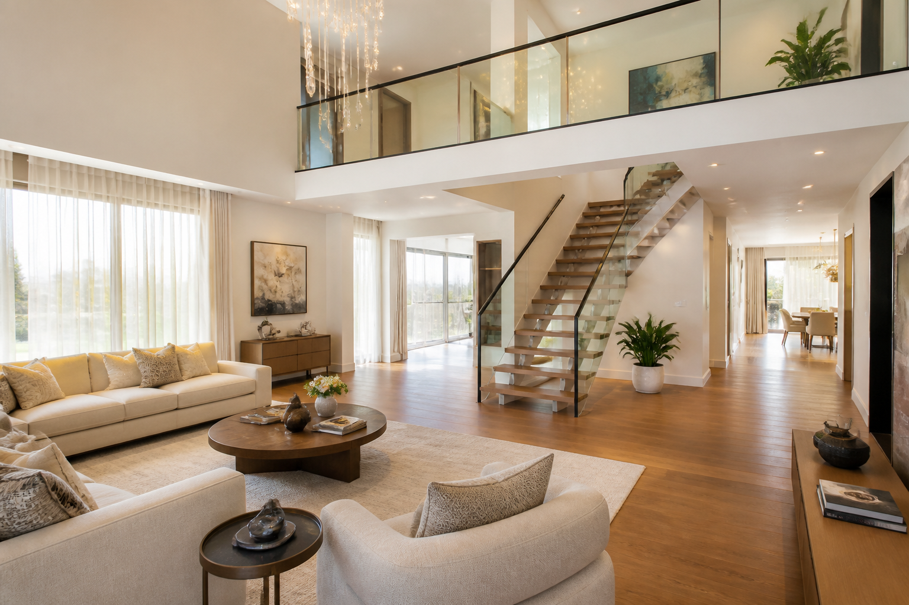
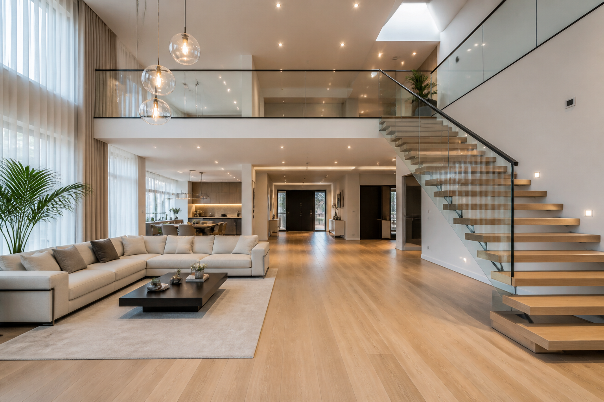
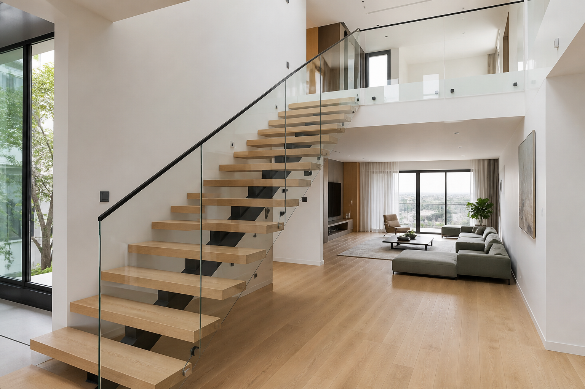
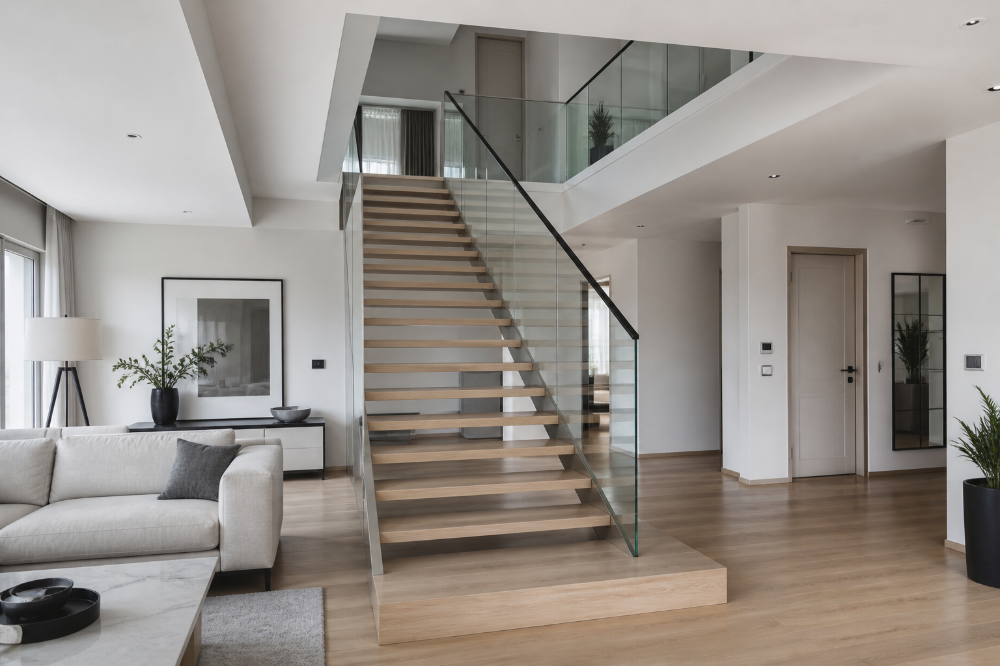
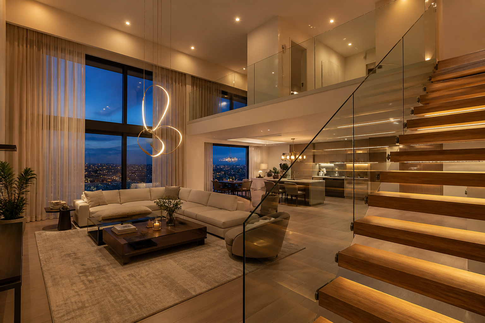
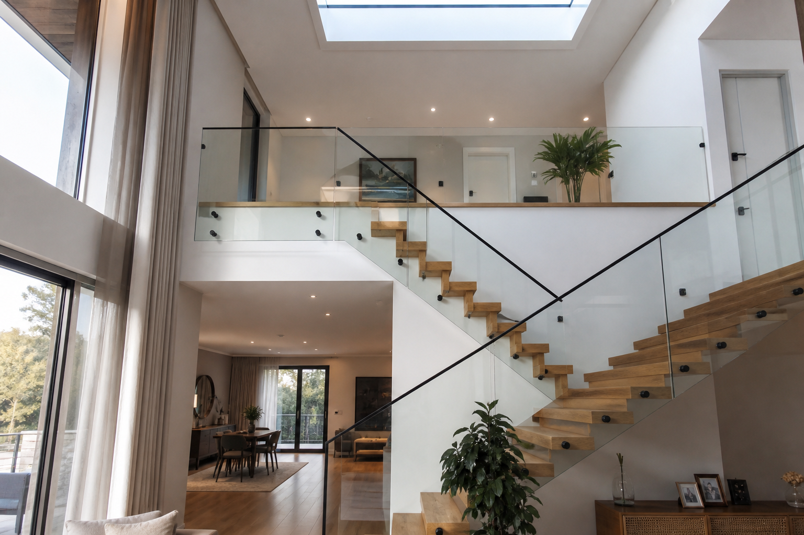
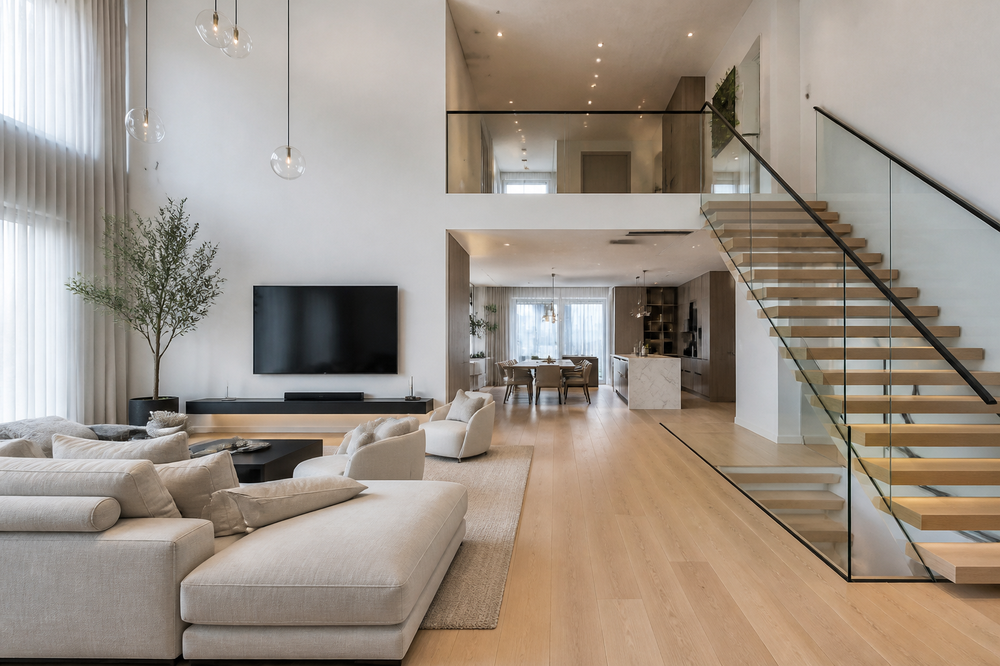
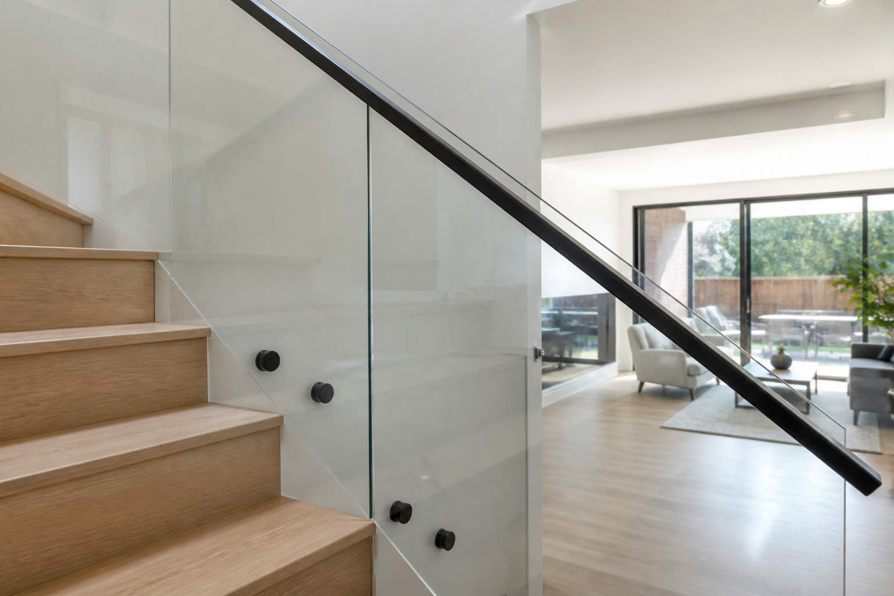

Konsept tasarım
Ortadaki kapı–ayna duvarı kaldırıldı; salon merdivenle tek açık hacim haline getirildi. Merdiven trabzonları temperli cam + ince siyah korkuluk olarak tasarlandı.








• Ortadaki kapılı / aynalı duvar kaldırıldı → daha geniş ve ferah salon.
• Merdiven ile salon arasındaki ayırıcı duvar kaldırıldı → açık bağlantı.
• Trabzonlar: temperli cam + ince siyah metal küpeşte (modern görünüm).
• Malzeme dili: açık meşe zemin, sıcak beyaz duvarlar, nötr mobilya.